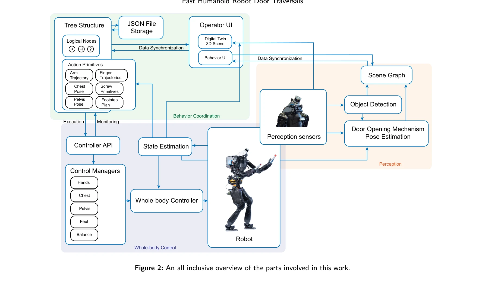
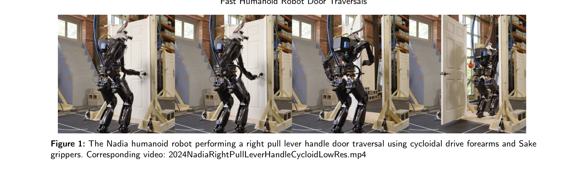

저자: Duncan Calvert, Luigi Penco, Dexton Anderson, Tomasz Bialek, Arghya Chatterjee, Bhavyansh Mishra, Geoffrey Clark, Sylvain Bertrand, Robert Griffin | 날짜: 2024-11-05 | URL: https://arxiv.org/abs/2411.03532

Figure 2: An all inclusive overview of the parts involved in this work.
휴머노이드 로봇의 다양한 도어 통과 작업을 수행하기 위해 GPU 가속 인식, Behavior Tree 기반 행동 조정 시스템, 전신 제어기를 통합한 아키텍처를 제시한다. 실제 Nadia 휴머노이드 로봇에서 빠른 도어 통과 성능을 달성했다.

Figure 1: The Nadia humanoid robot performing a right pull lever handle door traversal using cycloidal drive forearms an
Figure 2: An all inclusive overview of the parts involved in this work.
총평: 이족 휴머노이드의 도어 통과라는 미개발 영역을 처음 체계적으로 다루고, 실제 로봇에서 동작하는 통합 시스템을 구현한 의미 있는 연구이다. 행동 저작의 속도와 재사용성 향상, 다층적 시스템 설계 관점에서 독창성과 실용성이 우수하나, 단일 플랫폼 검증과 일반화 가능성에 대한 보완이 필요하다.